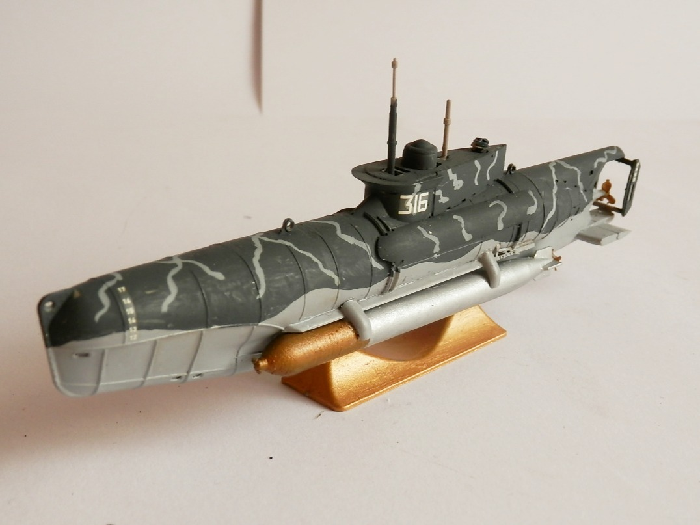
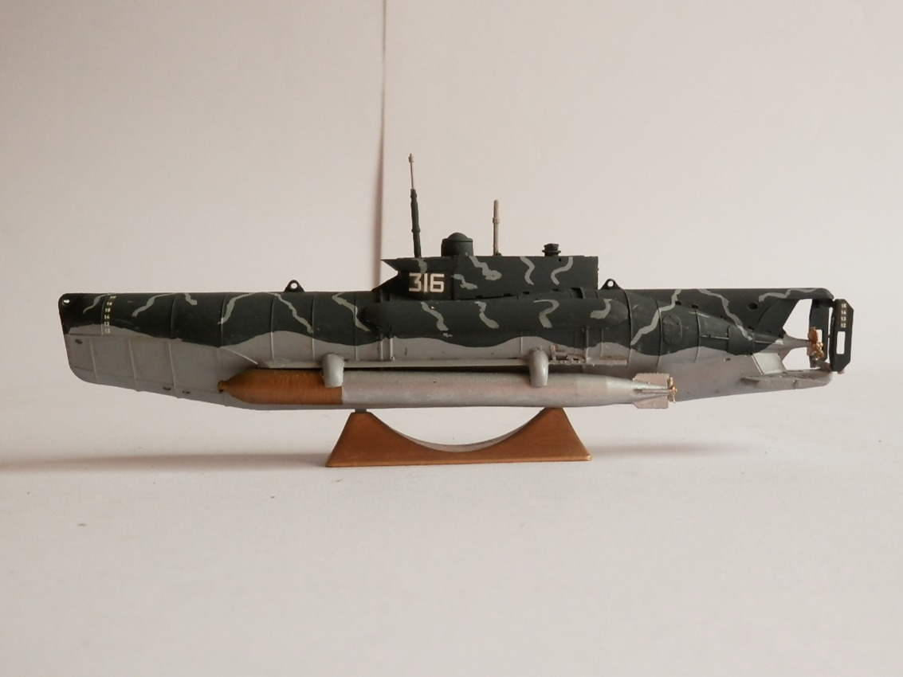
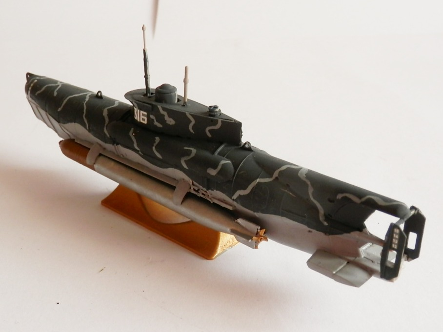

Navi · scale model archive
U Boot Type XXVII 'Seehund'
U Boot Type XXVII 'Seehund' — Kit: Revell, Scale: 1/72. The most successful type of the german 'midget' late war submarines

Photo gallery


English description
The most successful type of the german 'midget' late war submarines
Descrizione italiana
Il tipo di sommergibile tedesco tascabile di fine guerra che ebbe maggiore successo.